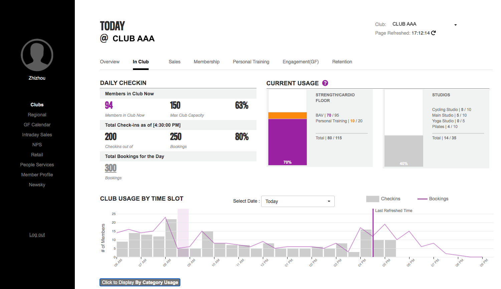
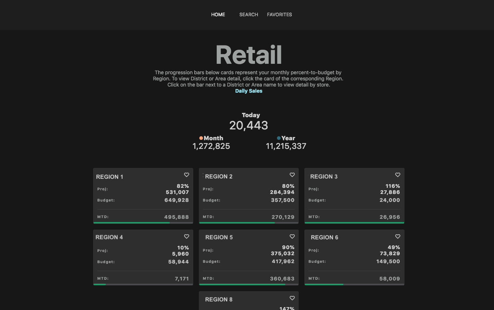
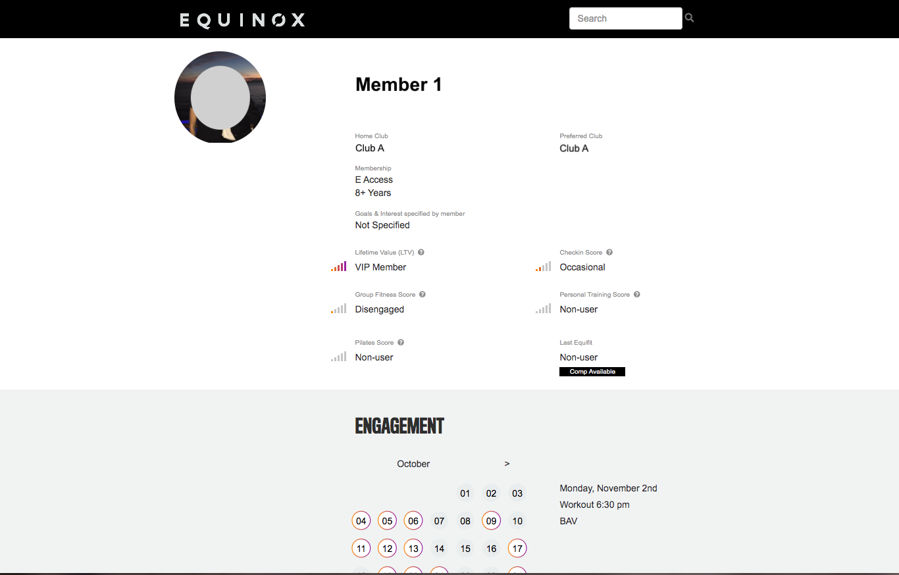

Zhizhou Wang

GM Dashboard
2018
GM Dashboard is a Flask based app built from scratch that incorporated different types of visualizations with number. In order to provide users a clear and straight forward view of club level performance as well as business insights, we worked closely with field employees and corporate managers to collect requirements and feedbacks. Caching data from our database into Redis, an api was created to be called by front-end to ensure the smooth loading performance and intraday update frequency. Users can log in to the dashboard with their company email and levels of access have been implemented.
Tool used: Flask, Adobe XD, d3.js, JQuery, Redis, SQL, Pandas

Retail Dashboard
2017
Retail dashboard was our first experimental dashboard to display daily and month to date company retail performance. Users can drill down into detail by clicking on regions and clubs. It was built on Flask and d3.js and was later upgraded to a React Native app.
Tool used: Flask, d3.js, React Native

Member Profile
2020
A new function of GM dashboard for club employees to have a better understanding of members in club. From GM dashboard, club employees can see a list of "how's in club" and there they can be redirected to this member profile page, where they can see all basic information of members as well as engagement data. The original aim of this page if for PTs to reach out to more possible opportunites and to start a conversation. Now this page can be linked from several other member related apps.
Tool used: Flask, JQuery, d3.js

Studies Finds Significant Overlap Between Sharks & Fisheries in the Open Ocean
May. 2016
Many shark populations are declining worldwide, primarily due to overfishing. For the majority of shark species, no international exploitation limits exists. Thus, information on their habitat preferences and the extent of overlap with commercial fisheries is critical for their conservation.
Tool used: Maya, three.js, Premiere, d3

All About Jumping
Aug. 2016
A study of jumping related competitions in Olympics. Analyzing on the Olympics score in these four sports in track and field events, I therefore explore what are some elements that contribute to the record-breaking of human being.
Tool used: Python, d3, Illustrator
Airbnb in Manhattan
Dec. 2016
Airbnb, the online peer-to-peer marketplace that enables people to list or rent short-term lodging in residential properties founded in 2008, has become one of people's prior choice while travelling in recent years. It has over 2,000,000 listings in 34,000 cities and 191 countries. There are 19,248 listings in Manhattan, counting half of all in New York City. This is a project studying through the price, location, accomodates and ratings of Airbnbs in Manhattan.
Tool used: Python, QGis, Illustrator
Cities and Culture
Dec. 2016
From Tokyo to New York, large cities are houses for millions of people from different background, countries, and history. The World Cities Culture Forum collected data of 33 cities around the world and the cultural life within those cities, allowing us to have a better understanding of those large cities in a distinct perspect. Looking through the project and get a better understanding of the distinct culture related life there, see which city is best for you?
Tool used: Python, d3, JQuery, Illustrator

Successful or Not? It's a Question: A brief introduction to coups from 1950 to 2010
Aug. 2016
On 15 July 2016, a coup d'état was attempted in Turkey against the government. After that, coup has been a popular topic among the public as well as media. But what's the definition of coup? How do we define a successful coup? With the data from Global instances of coups from 1950 to 2010: A new dataset, the graphic below presents all coups from 1950 to 2010.
Tool used: JQuery, d3

Mothers and Children: A Study of Relationship Between Female Education and Under Five Mortality Rate
Dec. 2015
Half the reduction in child mortality over the past 40 years can be attributed to the better education of women. For every one-year increase in the average education of reproductive-age women, a country experienced a 9.5 percent decrease in the child deaths.
A mother's education affects her children's health in myriad ways.
Better-educated women are more likely to understand disease-prevention measures such as vaccines and mosquito nets, and to use them. They are more likely to take a sick child to a clinic early and to follow treatment instructions. They are more likely to understand germ theory and set clean water and sanitation as household priorities.
Tool used: JQuery, d3

Can Your Salary Balance Your House Value? A Study of Homelessness in Major Cities of the United States
Mar. 2015
On a Single Night in January 2014, 578,424 people were homeless in the United States. In the past eight years, the total homeless population in the United States was decreasing. This is undoubtedly a good news. However, the total homelesspopulation in the New York City was increasing constantly. Coincidentally, in most of the largest cities in the United States, the homeless population is actually rising comparing to reduction in the nation wide. This comparison thus raises our question. Why does this situation happen?
Tool used: Illustrator

Does Gun Control Make Us Safer?
Jul. 2015
Due to some terrible gun shooting incidents recently, the public is increasingly worried about the gun safety problem. The line chart below shows all mass shooting incidents since 2013. We can find out that the frequency of these incidents actually remains the same, but those with larger number of kills or injures are more aware to the public. Analyzing from several different aspect, this infographic study on the question whether gun control is the way out.
Tool used: Python, Tableau, Illustrator

Captain America: What Makes Him a Hero?
Apr. 2015
Captain America, one of the most famous Marvel Super Heroes, has a great fame even in China. This infographic is about Captain America. Comparing him with himself, with normal people, with other Avengers, as well as with his enemy, we explore the special character of this normal but anormal person, see what makes him different from others, what makes him a noble man and what makes him a superhero.
Tool used: Illustrator, Photoshop

Miami Underwater
May. 2015
Rapid climate change has been affecting Miami for several years. The high
temperatures have resulted in higher tides, storm surges and sea levels.
The city has felt the impact in more ways than one, including economically and demographically.
In this project, we discuss the sea level rise through several aspects: history, future tendency, relationship with economy, impact on storm, as well as policies. This is a group working project using 3d and animation. Left only shows part of the project, click the image for more details.
Tool used: Illustrator, Maya, Photoshop

"He-Who-Must-Not-Be-Named" Or NOT?
Aug. 2016
It is well known that J.K. Rowling made a wonderful job in the Harry Potter series creating a lot of great characters. From Albus Dumbledore to Severus Snape, these “good” guys made themselves heroes in their specific but persuading ways. However, Lord Voldemort, standing on the other side of the book, however “bad” we know, was just described simply by the very word “bad”. Abandoned by his own family, having no friends at all, and killing himself twice, Lord Voldemort, must be the poorest bad guy ever. Considering the data collected from the book, did J.K. Rowling create successfully a “bad” guy that could match the greatness of the justice side?
Tool used: Python, Illustrator

How Much Do You Pay For Your Colonoscopy
Feb. 2015
A colonoscopy is an exam that views the
inside of the colon (large intestine) and
rectum, using a tool called colonoscope. The
colonoscope has a small camera attached to a
flexible tube that can reach the length of the colon.
The cost of a colonoscopy in the United States varies widely, from place to place, and even within a city. The average cost of the colonoscopy in the U.S. is about $1,185. However, in many other developed countries, it only costs a few hundred dollars. So why the prices vary so dramatically from place to place? Do you know what you're paying for?
Tool used: Illustrator
Digital Paystub on Employee App
2020
Employees barely use our 3rd party paystub system but these information can be significant for them. Therefore we decided to incorporate part of the page into our employee app.
Tool used: Adobe XD
All posters were made for non-profit uses. Most of them are posters for online-original-songs-organizations (check our websit if you're intesested in it) or for online articles. As you can see, many of the posters are of traditional Chinese style. I'm a big fan of ancient poems and culture!
{kind=link}
{kind=link}
{kind=link}
{kind=link}
{kind=link}
{kind=link}
{kind=link}
{kind=link}
{kind=link}
{kind=link}
{kind=link}
{kind=link}
Tradition vs. Transition: A Balancing Act
Dec. 2015
The idea of equal gender roles and equal opportunity for men and women is a growing topic of importance in today’s global society. Tradition and culture may be changed and potentially lost with the changing of roles. To some this may be a good thing, progressing to make men and women equal, but to others losing a part of their culture is too painful to handle. Some may rather continue on with their customs than change to fit a growing theme in global affairs.
This is a final group project for course Foreign Aid Debate: Producing Media Building Blocks of Knowledge of University of Miami.
Tool used: Premiere
The Song of Memory
Nov. 2015
This is a Music Movie based on the story of a famous TV series called 琅琊榜 (Nirvana In Fire) in China.
Tool used: Premiere